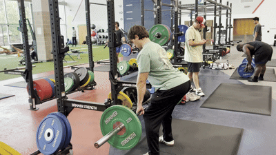
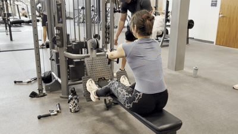
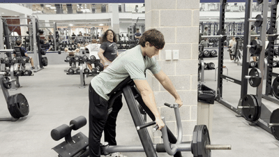

Skip to main content
Bent Over Rows
Equipment Needed

How To Do It
- Stand holding a barbell with a double overhand grip.
- Hinge forward at the hips until your torso is roughly parallel with the floor (or slightly above), keeping your spine neutral.
- Drive your elbows behind your body and retract your shoulder blades, pulling the bar toward your belly button.
- Once the bar touches your body, slowly lower it back to the starting position under control.
Seated Cable Rows
Equipment Needed
- Seated cable row machine
- V-bar or close-grip handle

How To Do It
- Attach a V-bar to the seated row machine, select the weight, and sit with your feet on the platform.
- Grasp the handle with a neutral grip and, with your knees slightly bent, sit upright with your back straight and shoulders back.
- Keeping your torso still, pull the handle into your stomach.
- Squeeze your shoulder blades together, pause, then slowly return the weight to the starting position.
Machine T-Bar Rows
Equipment Needed
- Chest-supported T-bar row machine
- Weight plates

How To Do It
- Lie face down on the pad of the T-bar machine and grasp the handles with a neutral or pronated grip.
- Drive your elbows behind your body while retracting your shoulder blades.
- Pull until your elbows reach (or just pass) your torso.
- Slowly lower the weight back to the starting position under control.
← Back to back muscles
 Muscle
Muscle